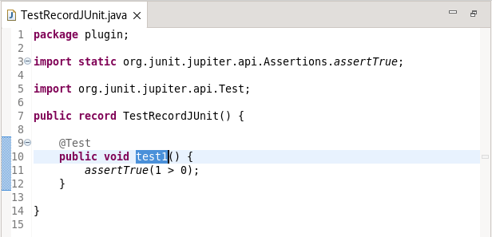
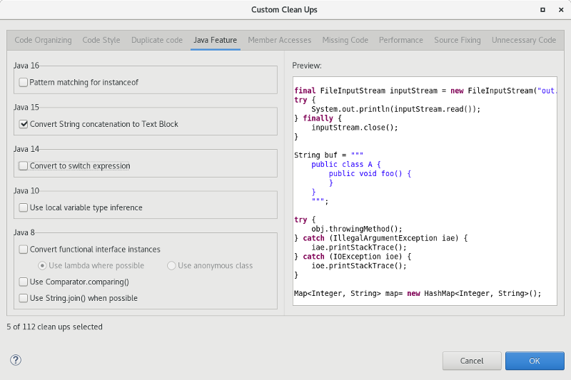
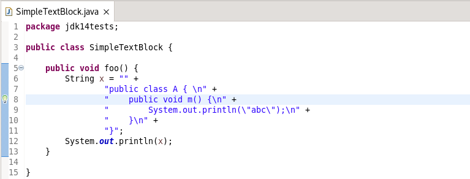
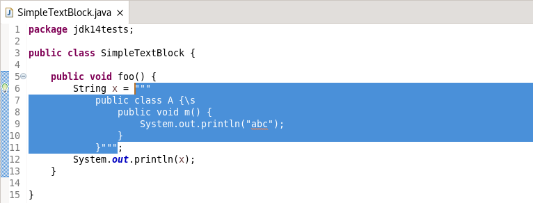
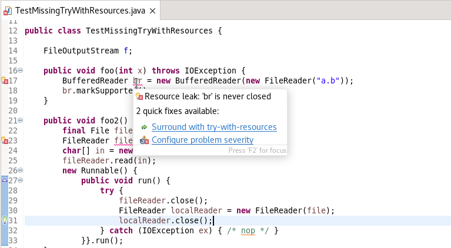
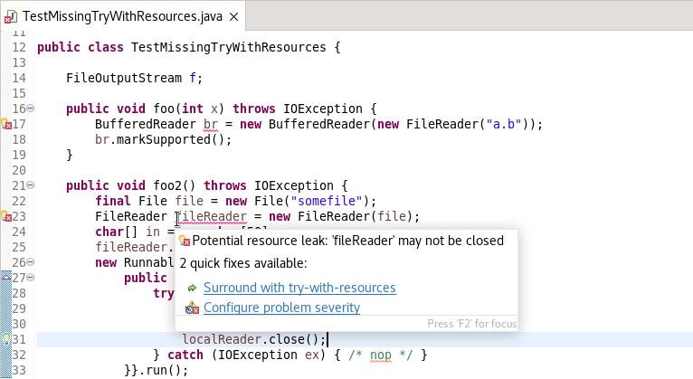
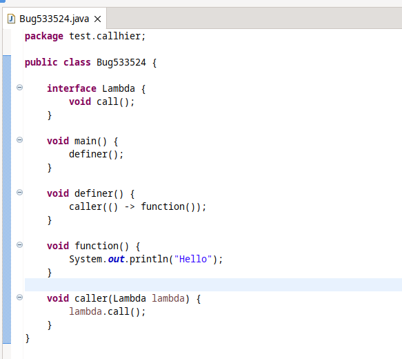
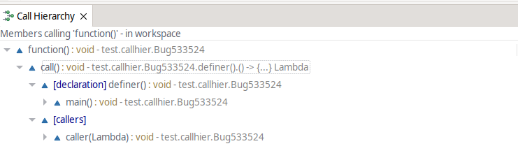

Java™ 17 Support
The release notably includes the following Java 17 features:
JEP 306: Restore Always-Strict Floating-Point Semantics.
JEP 406: Pattern Matching for switch (Preview).
JEP 409: Sealed Classes (Final).
Please note that preview option should be on for preview language features. For an informal introduction of the support, please refer to Java 17 Examples wiki.
JUnit
The following is an example of such a test:

Java Editor
To apply the cleanup, select the Convert String concatenation to Text Block checkbox on the Java Feature tab in your cleanup profile:

With the cleanup, the following:

Is changed to:

To change a single String concatenation, a quick-assist has been added that can be activated with CTRL+1 with the cursor located anywhere in the appropriate concatenation.
Examples of quickfix:


Java Views and Dialogs
For the following code:

Checking the callers of the function() will show this:

The [declaration] node in the tree is the new addition, which shows the callers of the definer() function, in this case, only the main() function.
The heuristics support:
- Path of .java or .class files.
C:\dev\src\p\MyType.java→MyType - Lines from Stacktraces.
o.e.u.i.Workbench$$Lambda$152/0x00000001002a1928.run(Unknown Source)→o.e.u.i.Workbench
Debug

After setting a label, everywhere the object appears it is displayed with a distinctive color and with the label: